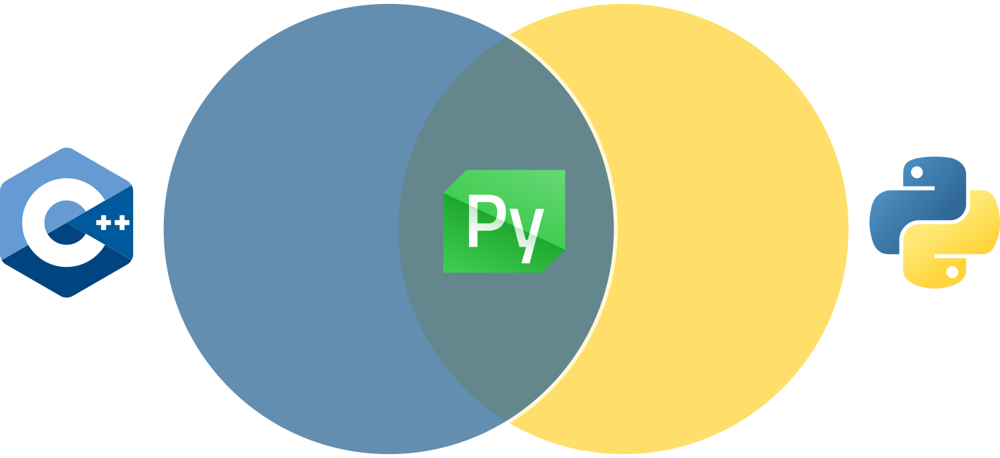
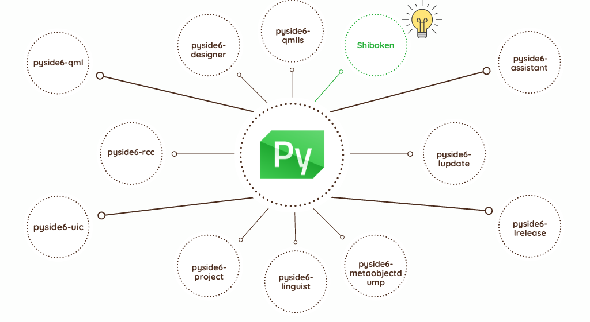
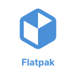

Deploying your Python application to Android
Shyamnath Premnadh


Hi, there 👋
Shyamnath Premnadh aka Shyam
Qt for Python
Senior Software Engineer @ TQtc


Why is Android an important platform ?🦾

Is Python a good alternative for Android development? 🤔
Currently, NO
But, why? 🤷♂️
Python 🚫 Android
- No official support for Android in CPython
- No native support for Python with Android SDK
- The app should bundle the Python binaries
Python 🚫 Android
- No official support for Android in CPython
- No native support for Python with Android SDK
- The app should bundle the Python binaries
But ....
Python 🫶 Android
- No official support for Android in CPython -
PEP 738: Adding Android as a supported platform - Malcolmn Smith - No native support for Python with Android SDK - Toga, PySide6, PyQt6
- The app should bundle the Python binaries
GUI frameworks with Android support
- Kivy
- Flet
- PySide6
- PyQt6
- Toga
Comparsion with an example
- Kivy
- Flet
- PySide6
- PyQt6
- Toga
Contact Manager Application
- Concise understanding of User Interaction
- Simple Data Model
- Event Handling
- Navigation and Layout
Flet
- Server-Driven UI framework based on Flutter
- Minimal API - Fully in Python
- Deploying as a web app on the browser or a progressive web app (PWA)
- Super active and responsive community - Discord, Github Discussions, Mailing list etc
- Apache-2.0 license
Contact Manager Application - Flet


API
- Easy to use
class AddContact(UserControl): ... def build(self): self.name = TextField(label="Name", icon=icons.PERSON) self.address = TextField(label="Address", icon=icons.LOCATION_CITY) self.city = TextField(label="City", icon=icons.LOCATION_CITY) self.mobile = TextField(label="Mobile", icon=icons.PHONE) submit_button = ElevatedButton(text="Submit", on_click=self.add_contact) cancel_button = ElevatedButton(text="Cancel", on_click=self.close_dlg) self.submit_cancel_button = Row([submit_button, cancel_button]) return Column([self.name, self.address, self.city, self.mobile, self.submit_cancel_button]) ... add_dialog = ft.AlertDialog(modal=True, title=ft.Text("Add new contact"), content=AddContact(contacts_dict)) def add_pressed(e): page.dialog = add_dialog add_dialog.open = True page.update() page.floating_action_button = FloatingActionButton(icon=ft.icons.ADD, on_click=add_pressed)
How to deploy?
- Prerequisites - Flutter SDK
- Run the command
flet build apk/aab
 apk (Android Application Package)- Packaging format
apk (Android Application Package)- Packaging format
aab (Android App Bundle)- Publishing format
PySide6
- Official bindings for the Qt framework
-
Two ways to create GUIs
- Qt Widgets - Python and C++
- Qt Quick - QML and Python/C++
- Interactive tool to create designs
- Qt Widgets - Qt Designer
- Qt Quick - Qt Design Studio
- Native feel and look
- Community Editon(LGPLv3/GPLv3) and Commercial Edition
Contact Manager Application - PySide
API
- More features and years of community support
ColumnLayout { id: grid ... TextField { id: fullName focus: true Layout.fillWidth: true Layout.minimumWidth: grid.minimumInputSize Layout.alignment: Qt.AlignLeft | Qt.AlignBaseline placeholderText: qsTr("Full Name") } TextField { id: address Layout.fillWidth: true Layout.minimumWidth: grid.minimumInputSize Layout.alignment: Qt.AlignLeft | Qt.AlignBaseline placeholderText: qsTr("Address") } ... } Dialog { id: dialog function createContact() { form.fullName.clear(); ... dialog.title = qsTr("Add Contact"); dialog.open(); } contentItem: ContactForm { id: form} } RoundButton { text: qsTr("+") highlighted: true anchors.margins: 10 anchors.right: parent.right anchors.bottom: parent.bottom onClicked: { currentContact = -1 contactDialog.createContact() } }
How to deploy?
- Prerequisites - Built custom Android wheels (Soon to go away), buildozer and p4a(kivy)
- Run the command
pyside6-android-deploy--wheels-pydie= --wheel-shiboken-
- CMake
- Preprocessor Directives
- Memory Management eg: raw_pointer, unique_pointer, shared_pointer
- Templates
- CMake
- Preprocessor Directives
- Memory Management eg: raw_pointer, unique_pointer, shared_pointer
- Templates
- Design Patterns eg: CRTP, Singleton, Visitor
- Meta-programming
- Overload resolution
- lvalue / rvalue
... and many more
So, what do we do ? 😶🌫️
Python to the rescue 🐍
Python popularity (1/2)
- From a QtWS2018 talk
- 7th Most Popular
- 3rd Most Loved
- 1st Most Wanted 🎉
- 4th Tiobe Index
- From a 2019 QtWebinar
- 4th Most Popular 📈
- 2nd Most Loved 📈
- 1st Most Wanted 🎉
- 3rd Tiobe Index 📈
Python popularity (2/2)
- 3rd Most Popular 📈
- 6th Most Loved 📉
- 1st Most Wanted 🎉
- 1st Tiobe Index 🎉
One can argue, those numbers are not really representative.
- 4rd Most Popular
- 6th Most Loved
- 2nd Most Wanted 📉
- 1st Tiobe Index 🎉
Applications of Python
Syntax
# Python
print("Python goes b" + "r"*10)
// C++
#include <iostream>
int main()
{
std::cout << "C++ goes b" << std::string(10,"r");
}
# Python
name = ["hello", "world"]
is_hello = True if "hello" in name else False
// C++
auto name = {"hello", "world"}
bool is_hello;
if (std::find_if(name.begin(), name.end(), "hello"))
is_hello = True;
else
is_hello = False;
# Python
# join a list of strings
words = ["this", "is", "a", "sentence"]
sentence = ' '.join(words)
//C++
auto words = {"This", "is", "a", "sentence"};
auto sentence = std::accumulate(words.begin(), words.end(), std::string{});
Relation with C++
- backend in C++
- used a binding generator for Python bindings
What else has a C++ backend ? 💭
Qt for Python
What you might know about Qt for Python
The official set of Python bindings for the Qt framework.
...but not only that 🤔.
Things that /maybe/ you didn't know 😮
Qt for Python is also an application suite
How do we bring C++ into Python world?
More videos: https://doc.qt.io/qtforpython/videos.html
How do we bring Python into C++ world?
Lets Code 🤖
QtScrypt (1/2)
- Inspired by QtScript, not a port
- A dynamic way to interact with Python from C++
- Enabling Python modules within C++ 🐍
- proof of concept
// Simple Engine
QScryptEngine e;
e.execute(...);
QVariant r = e.evaluate(...);
// Load Python module
QScryptModule mod(...);
// Get Function Reference
QScryptFunction f(..., &mod;);
// Call Function
QVariantList args;
QVariant r = f.call(args);
QtScrypt (2/2)
// [0, 1, 8, 27, 64, 125, 216, 343, 512, 729]
e.execute("print([i**3 for i in range(10)])");
// QVariant(QString, "Hello This Is A Test")
qDebug() << e.evaluate("f'hello this is a test'.title()");
//QVariant(double, 4950)
qDebug() << e.evaluate("sum(i for i in range(100))")
QScryptModule mod("super"); // super.py
QScryptFunction f1("add_three_numbers", &mod);
QVariantList args1;
args1 << 5 << 6 << 9;
// QVariant(double, 20)
qDebug() << f1.call(args1);
What about speed ?🏃
Not only vanilla Python 🍨
- Python implementation (in Python)
- Has a JIT
- On average 4.2 faster than CPython
- Mandelbrot Example: 10 times faster than CPython
The mandelbrot example
bugreports.qt.io/browse/PYSIDE-535
# Python
1/8, max ite: 96, time: 4.111s
2/8, max ite: 288, time: 7.179s
3/8, max ite: 1056, time: 22.156s
4/8, max ite: 4128, time: 82.706s
5/8, max ite: 16416, time: 371.348s
# PyPy
1/8, max ite: 96, time: 4.732s
2/8, max ite: 288, time: 4.99s
3/8, max ite: 1056, time: 6.872s
4/8, max ite: 4128, time: 12.451s
5/8, max ite: 16416, time: 33.341s
Deployment 🚢
...I hear Kde likes Flatpak 🧐
pyside6-deploy(1/2)
- Desktop Deployment
- Normally uses Nuitka
- But, also supports Flatpak
- What is Nuitka?
- Python Compiler
- Translate Python to C -> compiled -> linked
Android Deployment:We are working on it
pyside6-deploy(2/2)
Needs video change for Flatpak
Whats in it for Kde ?
- Python plugins for Krita
- PyFalkon - python bindings for Falkon
- PySide6 Qml code with Kirigami and Plasma

Resources
- Product landing page qt.io/qt-for-python
- Wiki page pyside.org
- Official docs doc.qt.io/qtforpython
Communication channels
- Telegram https://t.me/qtforpython
- IRC/Matrix #qt-pyside on Libera.chat
- Mailing list lists.qt-project.org/mailman/listinfo/pyside
More platforms at wiki.qt.io/Qt_for_Python#Community
How C++ and Python can strive together
Shyamnath Premnadh